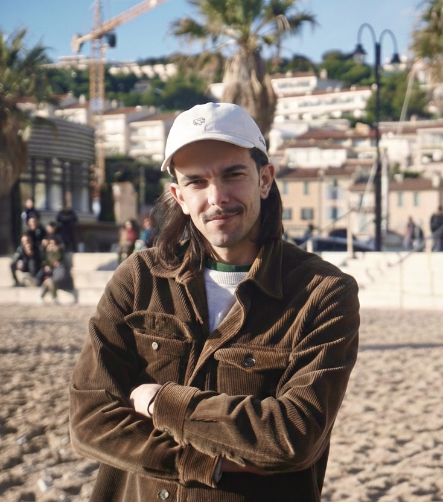

Baptiste Leroux
PhD Researcher in AI | Computer Vision & Multimodal Sign Language
Developing architectures to bridge human interaction and machine understanding. Currently based in Reykjavik, my research focuses on visual sequence modeling, 3D processing, and generative synthesis.

Current PhD Research
Project: Sign and Talk
The Sign and Talk project tackles fundamental challenges in multimodal representation learning by developing novel approaches to align distinct embedding spaces from speech and sign language modalities.
Sign languages encode information through parallel channels-manual signs, spatial grammar, facial expressions-operating simultaneously in 3D space, presenting unique computational challenges for cross-modal alignment.
The project will pioneer mathematical frameworks for multimodal integration, advance video transformer architectures for temporal-spatial dynamics, and develop few-shot learning methodologies for ultra-low-resource scenarios with only 200-300 primary users.